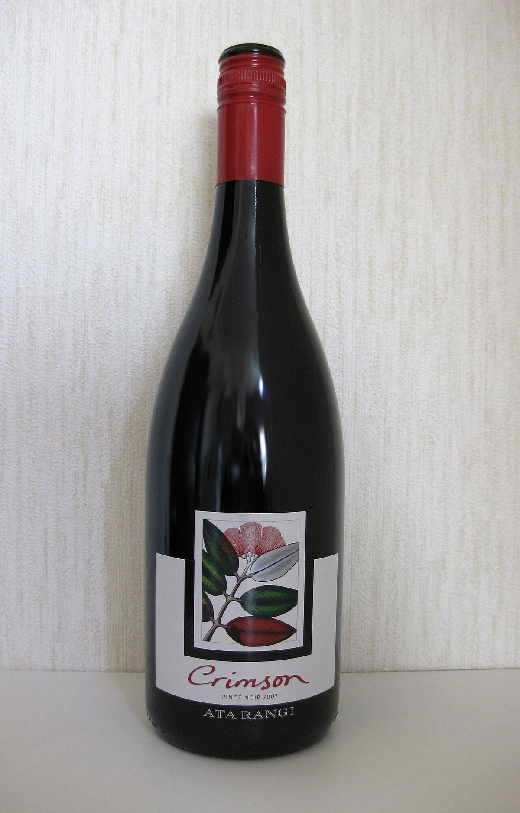
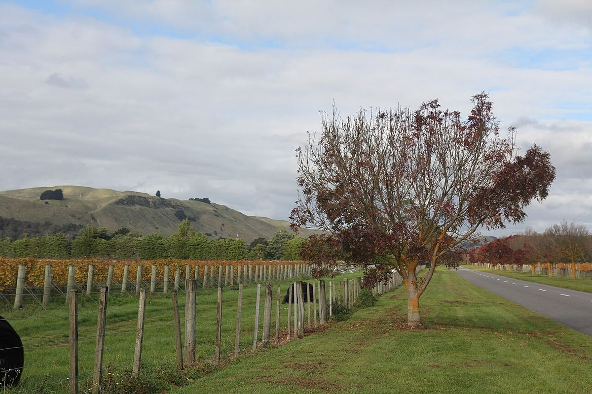

ROSSO

Martinborough, nel sud della regione di Wairarapa, sull’Isola del Nord, è una piccola zona vitivinicola che è stata pioniera del Pinot Nero di qualità in Nuova Zelanda.

Martinborough è una piccola cittadina della regione di Wairarapa, a poco più di un’ora da Wellington, separata dalla capitale dalla catena di Rimutaka. Anche se alla fine dell’Ottocento nella regione c’erano alcune viti, la viticoltura moderna iniziò nel 1978, quando uno studio dello scienziato Derek Milne evidenziò che il clima e i suoli della zona somigliavano per certi aspetti a quelli della Borgogna. Da allora un gruppo di pionieri, tra cui i fondatori di Ata Rangi, Dry River e Martinborough Vineyard, piantò viti sulle terrazze che circondano il paese.
Negli anni Ottanta e Novanta questi piccoli produttori dimostrarono che la Nuova Zelanda poteva produrre Pinot Nero di grande qualità, e i loro vini fecero da riferimento per altre regioni del paese. Martinborough ha mantenuto una scala modesta, con molte cantine di famiglia e una piccola quota della produzione neozelandese, ed è diventata una meta del fine settimana per gli abitanti di Wellington.
Il clima è fresco e secco per l’Isola del Nord, grazie all’effetto di riparo delle catene di Tararua e Rimutaka, che trattengono le piogge provenienti da ovest. Le giornate estive possono essere calde e le notti fresche, e gli autunni sono di solito secchi. Il vento, spesso forte, soprattutto in primavera durante la fioritura, riduce le rese e dà grappoli piccoli e concentrati. Il cuore della denominazione è la cosiddetta Martinborough Terrace, un’antica terrazza fluviale di ghiaie profonde e molto drenanti coperta da uno strato di loess e limi. Questa combinazione di suoli poveri, clima secco e vento limita il vigore delle viti.
Il Pinot Nero è il vitigno principale e dà rossi un po’ più strutturati di molti altri neozelandesi, con frutto rosso e nero, note di spezie, erbe e sottobosco, tannini saldi ma fini e buona capacità d’invecchiamento. Tra i bianchi si producono Sauvignon Blanc, di trama più ricca rispetto a quello di Marlborough, Chardonnay, Pinot Grigio e Riesling, quest’ultimo talvolta con un po’ di zucchero residuo. La piccola scala di molte cantine favorisce una vinificazione molto curata, e molti produttori lavorano con vecchie vigne piantate nei primi decenni della regione. Diverse cantine offrono degustazioni nel paese stesso, la cui pianta originaria a forma di bandiera britannica è una delle sue curiosità.
